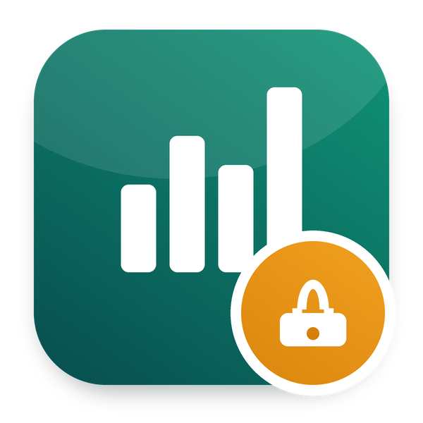

Anonymous pulse surveys and eNPS: one-time links that never tell who answered, results per department from five answers
Part of Odoo Mates HR · Odoo 20 Community and Enterprise
One-time links: Odoo never stores who answered what
Promoters less detractors, the average of each statement
Results of each department from five answers
Works with Odoo 20 Community and Odoo 20 Enterprise.
om_hr_base, survey.
Odoo Mates HR
The HR suite of Odoo Mates for Odoo 20: every module installs on its own, the links between them are bridges.
Support: odoomates@gmail.com